Methodology#
The problem#
with \(f\) and/or \(g\) non-convex, so that the problem has several local minima. A local solver returns whichever minimum lies in the basin of its starting point, and a global one pays for the exploration of the whole design space.
Motivation: separating exploration from exploitation#
The idea is to make the two concerns explicit rather than have a single algorithm arbitrate between them:
exploration decides where to look, over a finite set of regions;
exploitation solves the original problem inside one region, with a local gradient-based algorithm, which is what such algorithms are good at.
The regions come from a Cartesian subdivision of the design space: each component \(x_j\) is split into \(m_j\) contiguous subdivisions \([l_{j,k}, u_{j,k}]\). Their Cartesian product defines \(\prod_j m_j\) boxes.
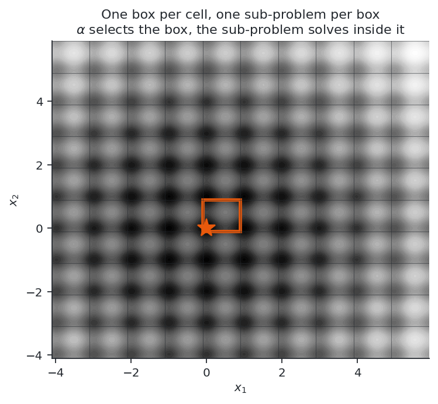
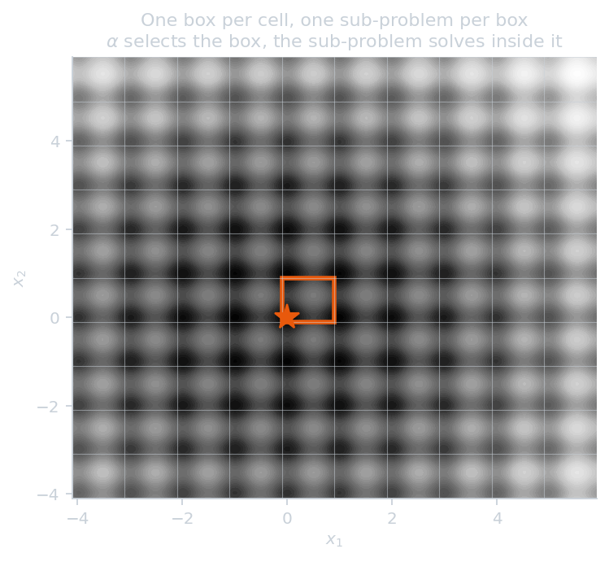
Choosing a box is a categorical decision, solving inside it is a continuous one, so the problem becomes a mixed-integer non-linear program, which is exactly what a bi-level outer approximation solves.
Encoding the choice of a box#
One categorical variable per design variable component, one-hot encoded as \(\alpha_{j,k} \in \{0,1\}\) with \(\sum_k \alpha_{j,k} = 1\).
Important
The master problem carries \(\sum_j m_j\) binaries, linear in the number of components, while the number of boxes \(\prod_j m_j\) is exponential in it. The Cartesian product is never enumerated.
The bounds of the selected box are affine in \(\alpha\):
What grows with the dimension#
The boxes are the Cartesian product of the subdivisions, \(\prod_j m_j\), which explodes with the number of variables. The master does not see them: it sees the one-hot binaries, \(\sum_j m_j\), which grow linearly. Five variables with ten subdivisions each is \(100\,000\) boxes and \(50\) binaries.
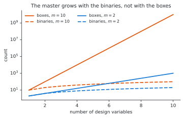
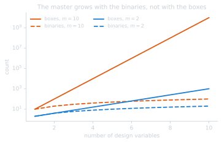
What a budget buys is neither of those, but the number of sub-problems solved, a few dozen for a few thousand evaluations. So the quantity that decides whether a subdivision is usable is the ratio between the coefficients of the cut model, \(\sum_j m_j\), and the cuts that can be afforded. A fine subdivision is not out of reach because of its boxes; it is demanding because its model has more coefficients to identify.
That ratio is measurable, and it is the ceiling on the density: on five variables with a budget affording some fifty sub-problems, ten subdivisions per variable, fifty binaries over a hundred thousand boxes, is the best density measured, while sixteen, eighty binaries, is markedly worse.
The floor is set by the landscape rather than the budget: the subdivision has to separate the basins, which is why a problem whose minima are one unit apart over a range of ten needs ten subdivisions and is not solved by two. Between the two there is usually room, and there need not be: a subdivision fine enough to resolve the basins may already carry more coefficients than the budget can identify, and that is the case the method cannot serve.
Refining past the basins is not free either. A box holding no minimum of its own returns a value and a post-optimal sensitivity that describe a constrained solution on its border, which says nothing about where the minimum is, so an over-fine subdivision degrades the ranking rather than merely wasting sub-problems. All three effects are measured in the results.
The bi-level problem#
Level |
Decides |
Solved by |
Role |
|---|---|---|---|
Main |
the box, \(\alpha\) |
MINLP master, outer approximation |
exploration |
Sub |
\(x\) inside the box |
NLP, local |
exploitation |
This is the Benders formulation of
gemseo-bilevel-outer-approximation,
with the box-selection variables as the categorical variables of the main
problem.
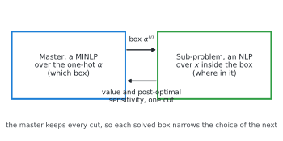
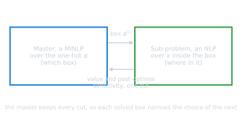
Outer approximation and its sensitivity#
The master builds a piecewise-linear underestimator of \(u\) from the sub-problems solved so far, one cut per visited \(\alpha^{(i)}\):
and minimizes \(\eta\) over the one-hot polytope. The cuts are what make the exploration informed rather than exhaustive, so the slope \(s^{(i)}\) is the heart of the method.
GEMSEO obtains it by post-optimal analysis of the sub-problem:
The bounds \(\ell \le x \le u\) appear in the sub-problem but not in this formula: it assumes them constant with respect to the parameter \(p\). This single fact drives the whole implementation, and the two formulations below are the two ways of living with it.
The trust region of the master#
The master does not choose among all the boxes at every iteration: it restricts the mixed-integer problem to a neighbourhood of the incumbent box \(\alpha\),
whose radius shrinks when the upper bound stops improving. The constraint reads
as a budget: a candidate \(\alpha'\) pays \(w_j(\alpha)\) for every component it
changes, and may spend max_step in all.
What the weights have to be#
The weight charged is the one the incumbent selects, \(w_j(\alpha)\), not anything about the category the candidate moves to. The constraint therefore cannot express a proximity between categories: whether a candidate moves to the neighbouring subdivision or to the far end of the range, it pays the same. This is the right constraint for a genuinely categorical variable, where no two categories are nearer than any others, and it is what the bilevel outer approximation was written for.
A subdivided variable looks ordinal, and taking that invitation — weighting each subdivision by its own index — is the obvious thing to do. It makes the region lopsided rather than local: leaving the first subdivision of a component is free, leaving the last costs \(m_j - 1\), and neither has anything to do with where the candidate lands.
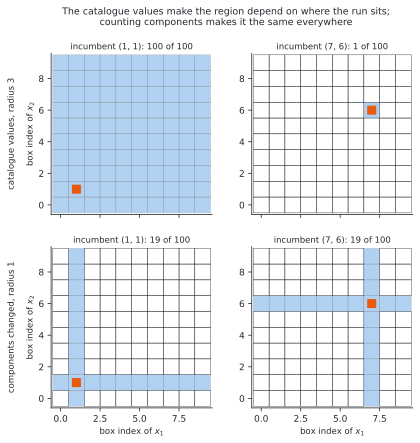
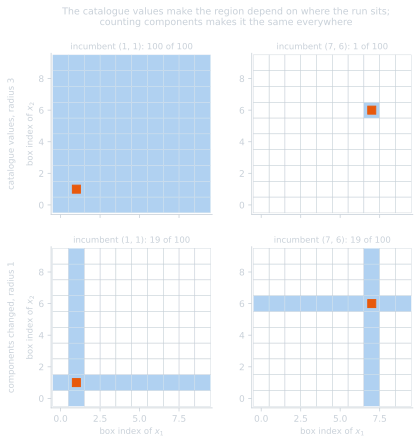
The two rows are the same two radii seen from two incumbents. Under the catalogue values the region is the whole design space at \((1,1)\) and the incumbent alone at \((7,6)\); counting components it is the same nineteen boxes at both.
So the design spaces of this package weigh every subdivision alike,
\(w_j \equiv 1\), and the distance becomes the number of components a candidate
changes, that is the Hamming distance between the two one-hot encodings. The
diameter is then \(n\), which
max_step
returns, and that is the radius at which the region stops constraining, not the
radius to use.
Expressing the ordinal proximity properly would need a different constraint, \(|v^\top\alpha' - v^\top\alpha| \le \texttt{max\_step}\) on the catalogue values \(v\), which is not what the master builds. It was measured through a stub, in annex C, and it is not better: multimodality behaves like a categorical choice, neighbouring boxes being no more alike than distant ones.
How wide it should be#
Small. On Rastrigin with five variables and ten subdivisions, a radius of two components reaches the optimum from every starting point; widening it to the whole design space, or removing the region altogether, loses it. The region is what makes a fine subdivision usable at all, see the benchmark, and the measurements are in annex C.
Two formulations#
Box as a constraint#
Keep \(x\) as the sub-problem variable and move the box into the constraints, as one vector-valued function of dimension \(2n\):
The dependency on \(\alpha\) now travels through \(\lambda_g^\top \partial g/\partial \alpha\), and the slope is exact and analytic:
where \(\lambda^{u}_j, \lambda^{\ell}_j \ge 0\) are the multipliers of the upper and lower faces of the box, that is the shadow price of moving a face.
\(g_{\text{box}}\) is linear in \(x\) and affine in \(\alpha\), hence jointly convex: all the non-convexity stays in the original \(f\) and \(g\).
Box as normalized variables#
Solve instead for \(\xi \in [0,1]^n\), with
The box is then the bounds of the sub-problem, and those bounds are the unit interval whatever the box, so the assumption made by the post-optimal analysis holds instead of being worked around. The slope comes from the partial derivative rather than from multipliers:
correct at an interior optimum, where \(\nabla_x f\) vanishes, and on a face, where \(\xi_j\) is pinned to a bound so the partial derivative is the total one.
The counterpart is that \(x\) is bilinear in \((\xi, \alpha)\): the choice of the box enters the non-linearity of the objective instead of staying in a jointly convex constraint. As shown in the benchmark, this costs nothing in quality: under the same master settings the normalized formulation reaches the optimum from every starting point and the constraint one from all but one.
Convexification#
Outer-approximation cuts are supporting hyperplanes only if \(u\) is convex. On a multimodal problem \(u\) is not, so a cut built at one box can lie above \(u\) elsewhere and cut the global optimum off. The master then converges quickly, and reports a wrong answer without any error.
Warning
Guarding against this is the single most important setting of the method, and
both guards are off by default: convexification_constant=0.0 and
adapt=False. On the benchmark below, that default reaches the global optimum
from none of the starting points while reporting success.
The master offers two mechanisms for it, described below. They act differently and are not meant to be combined: use the fixed constant \(\kappa\), which carries the convergence guarantee, or the adaptive repair with its convexity margin, which reaches the optimum more often, and leave the other at zero.
What the convexification actually is#
gemseo-bilevel-outer-approximation adds to the objective a term that is
convex in the relaxed one-hot variables and vanishes at every integer point:
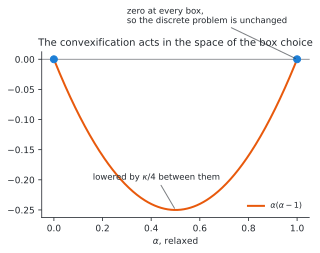
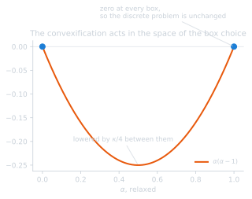
Each term \(\alpha(\alpha-1)\) is convex, equals \(0\) at \(\alpha \in \{0,1\}\) and reaches \(-1/4\) at \(\alpha = 1/2\). Two consequences:
the discrete problem is unchanged: at any feasible one-hot \(\alpha\), \(C(\alpha) = 0\), so \(\tilde u = u\) and the optimum is exactly the optimum of the original problem;
the relaxation is lowered between the vertices, which is what restores the validity of the cuts. Large enough \(\kappa\) dominates the non-convexity of \(u\) over the relaxed polytope.
In practice the term is never evaluated: only the slope of each cut is corrected, by \(\nabla(\kappa C)\),
which at an integer \(\alpha^{(i)}\) tilts the hyperplane by \(\pm\kappa/n_{\text{comp}}\) per component while leaving its value at \(\alpha^{(i)}\) untouched.
Note
This is a convexification in the space of the box selection \(\alpha\), not an \(\alpha\)BB-style underestimator of \(f\) in the space of the design variables \(x\). It is not built from bounds on the Hessian of \(f\), and it does not become tighter as the boxes get smaller. Subdividing more finely still helps, but for a different reason: each box becomes closer to unimodal, so the local sub-problem solve is more likely to return the box optimum, which is what the cuts assume.
Adaptive convexification#
With adapt=True, instead of relying on \(\kappa\) alone, the master repairs the
slopes against the data it has already gathered. For every pair of visited
points, the cut at \(\alpha^{(i)}\) must not over-predict the observed value at
\(\alpha^{(j)}\):
with \(\delta\) a convexity margin (min_dfk). The violations are collected and a
least-squares correction is applied to each slope so that the cuts become
consistent with the whole history. It is a data-driven repair of cut validity,
and it replaces \(\kappa\) rather than composing with it: the margin \(\delta\)
enforces the convexity the constant would otherwise impose, from the observed
values rather than from a worst case, so setting both applies the correction
twice over. Being a margin on the objective, \(\delta\) is an absolute
quantity in the units of \(f\) and has to be scaled to the problem, whereas
\(\kappa\) scales with the relaxed polytope.
The two differ in what they guarantee. A large enough \(\kappa\) dominates the non-convexity of \(u\) over the relaxed polytope and the cuts are then valid by construction, which is the convergence argument; but it also lowers the master’s lower bound by nearly \(\kappa\), so the bound never meets the incumbent and the run ends on the trust region instead of on the tolerance, see annex C. The adaptive repair keeps the bound usable and, on the benchmark, reaches the optimum from every starting point, but it enforces convexity only against the boxes already visited, so it carries no guarantee.
Sweeping it instead of calibrating it#
Both mechanisms ask for the same thing in the end: a number in the units of the objective, of the order of the variation the cuts have to dominate. That number is the standing criticism of the method, because the user is asked for it before the run has measured anything. A margin of \(100\) reaches the optimum from every starting point on Rastrigin, which spans about eighty, and is the worst of those tried on Ackley, which spans about twenty-two, so a better default does not answer the criticism: no single number is right for two problems.
Not choosing does. The master already refuses to choose its trust-region radius: it probes one radius per parallel point, over \([\Delta/2, \Delta]\), so its parallel points are a sweep rather than a batch. The same probes can carry a ladder of convexity values \(\kappa_1 < \dots < \kappa_N\), geometric below an upper bound, one rung per probe:
probe \(k\) solves the master at rung \(k\), so one iteration spans the ladder instead of repeating one value. The two ladders pair up, the tight region with the raw cuts and the wide one with the dominated cuts, so an iteration returns the exploitative box and the exploratory one;
a probe proposing a box already solved climbs one rung, and again, until it proposes a new box or the ladder is exhausted. Escalating changes the cuts, which is what moves the master elsewhere, and it costs one more mixed-integer solve and no objective evaluation — the currency this method is measured in;
every probe exhausting the ladder is a stopping criterion, and a stronger one than a single value proposing nothing: no convexity up to \(\kappa_{\max}\) proposes a box that has not been solved.
What is left to supply is the upper bound alone, the rungs being the probes. And the bound need not be supplied either: both mechanisms are calibrated against the variation of the objective over the design space, which the master observes as it solves boxes, so the bound can be read off the spread of the values already obtained. Read literally that estimate is circular — the first boxes are the handful the first iterations proposed, and on a broad basin they look alike — so it is taken with a decade of headroom, a dimensionless factor, which is not the quantity the criticism is about.
The sweep is a loop over the master’s own probes, so it belongs to the master and
is implemented there. What this package supplies is
SweptBoxSubdivisionSettings, the
entry point of a run that calibrates nothing, and a driver that sweeps from
outside a master predating the loop. What the sweep costs and what it reaches is
in the results,
and the measurements behind it in
annex C.
Subdividing some variables only#
Nothing requires every variable to be subdivided. A variable left out stays an ordinary variable of the sub-problem, which keeps the product of the subdivisions small while resolving the variables that need it:
subdivision = BoxSubdivision.from_design_space(design_space, 10, ["x_split"])
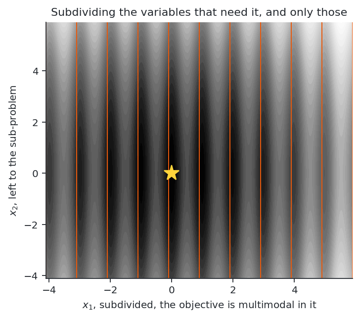
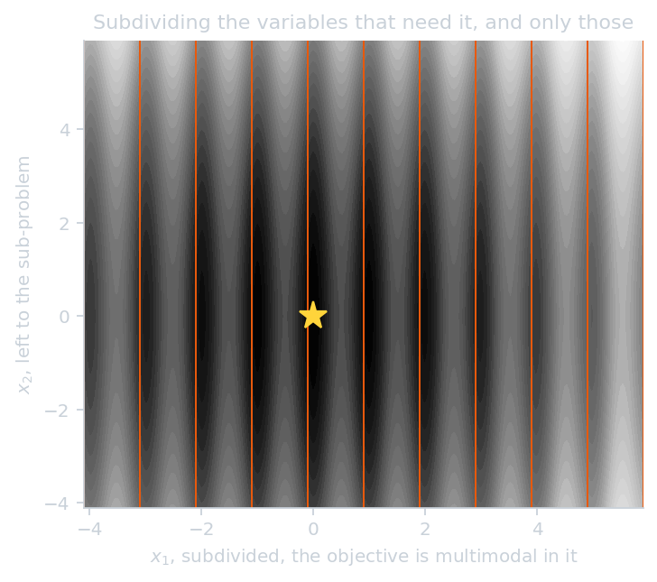
The exchange is only worth it when the objective is close to unimodal in the variables left out: one of them keeps all of its basins inside every box, and the local solve returns the basin it starts in. It therefore solves a problem whose multimodality is concentrated in a few variables, and loses on one that is multimodal in all of them.
Hierarchies of subdivisions#
A subdivision fine enough to resolve the basins spends its budget over the whole design space. A hierarchy spends it where it seems to matter: subdivide coarsely, rank the boxes, and refine a promising one with a subdivision of its own, recursively. Formally, a node of the hierarchy is a box \(B = [l, u]\), and refining it means running the method of the previous sections on \(B\) instead of on the original design space, its children being the boxes of that subdivision. The resolution after two levels of \(m^{(1)}\) and \(m^{(2)}\) subdivisions is their product, \(m^{(1)} m^{(2)}\) per variable, while no master ever carries more than \(\sum_j m^{(k)}_j\) binaries.
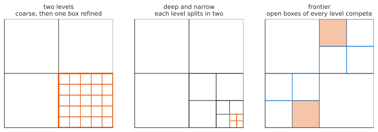
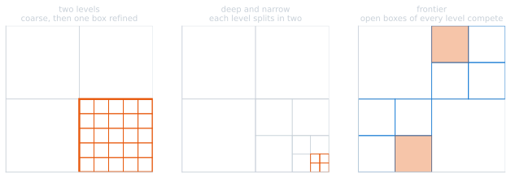
Scoring a box#
Everything depends on how a box is scored, since the score decides what is refined, and two scores are available.
The value of a box is the optimum of its sub-problem, \(u(\alpha) = \min_{x \in B(\alpha)} f(x)\), as returned by the local solve. It is an upper bound on the true optimum of the box, since a local solve started at the centre of \(B\) returns the minimum of the basin it lands in. It exists only for the boxes actually solved, a few dozen of them at most.
The cut model is the lower envelope the master has built from those solves,
with \(s^{(i)}\) the post-optimal sensitivity of the sub-problem. It is defined at every box of the subdivision, those never solved included, and it is an optimistic estimate wherever the cuts are valid.
The two therefore rank for opposite reasons. Ranking by the value exploits: it can only propose a box already solved, and its ranking is meaningless when a coarse box holds several basins, since the score is then decided by which basin the centre falls into. Ranking by the cut model explores: far from every solved box the cuts extrapolate linearly downwards, so the lowest score belongs to a distant, unvisited box.
Three shapes#
Two levels. Solve the coarse subdivision, rank its boxes, refine the best \(k\) of them with a share of the budget each:
solve the coarse subdivision of the whole space
for each of the k best boxes:
solve a fine subdivision of that box
Deep and narrow. Split every variable in two at each of \(d\) levels, refining the best box each time, which reaches \(2^d\) subdivisions per variable while keeping \(2n\) coefficients per level:
B <- the whole design space
repeat d times:
solve the subdivision of B in two per variable
B <- the best box of that subdivision
A frontier. Keep the open boxes of every level in one priority queue, expand the most promising, and put its children back:
frontier <- {the whole design space}
while the budget allows:
B <- the box of the frontier with the lowest score
solve the subdivision of B
push its most promising children onto the frontier
Only the last one can undo a choice: the first two descend, so the box refined at one level is the only space the next level ever sees, and a score that was wrong is never revisited. That is the definition of a spatial branch-and-bound, with the cut model in the place where a relaxation would be.
What a hierarchy costs#
A node solved in isolation is a master of its own, and that is where the construction pays for itself. Writing \(c\) for the number of sub-problems a budget affords, a flat run puts all \(c\) cuts into one model of \(\sum_j m_j\) coefficients, while a hierarchy of \(N\) nodes puts \(c/N\) cuts into each of \(N\) models. The cuts of a parent are moreover expressed over the one-hot variables of its subdivision, so they have no meaning in the subdivision of a child: refining discards them.
That is the trade, and it is the reason the shapes above behave as they do: a hierarchy improves the ratio of coefficients to cuts per level and destroys the model the ratio is about. A hierarchy that did not pay it would need a master over a growing set of leaves, adding binaries as a box is split and keeping every cut, which is a different master problem from the one this package builds on, whose catalogue of boxes is fixed when the design space is created.
That trade is why the hierarchies lose to the flat subdivision on the problems a flat subdivision can resolve. Where they win is a case the flat method does not reach within the same budget: a basin too broad for the densities that budget affords. Ackley’s single basin spans a range of sixty, and the deep hierarchy, splitting each variable in two four times over, reaches its optimum from four starting points out of six against two for the flat subdivision at its best density, both having stopped on their own criteria rather than on their budget. Each of its levels carries only \(2n\) coefficients, so a quarter of the budget is enough to determine one, and the resolution reached is \(2^4\) per variable without any level ever being large.
The measured behaviour of the three shapes, and of the two scores, is in annex D.
One master, several levels: the multi-resolution encoding#
The hierarchies above put their levels in different masters, one after the other, and that is what they pay for. The same levels can be put in the same master instead, and the construction that does it is worth setting out on its own, because it removes the cost of a hierarchy without removing its resolution.
The encoding#
A box is chosen by one categorical variable per level rather than by one categorical variable over the whole subdivision. With \(L\) levels of \(m\) subdivisions each, the lower bound of a component is the sum of the fractions of the design space its levels select:
with \(\Delta_j = U_j - L_j\) and \(d_k \in \{0, \dots, m-1\}\) the subdivision the \(k\)-th level selects, one-hot encoded. This is the base-\(m\) representation of the box index: the levels are its digits, the first level choosing the coarse region and each further level choosing a sub-region inside it.
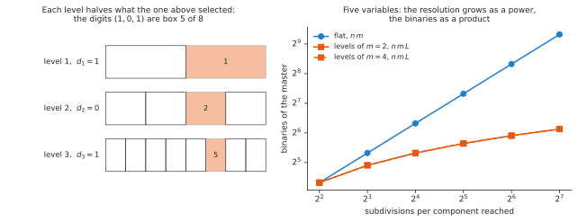
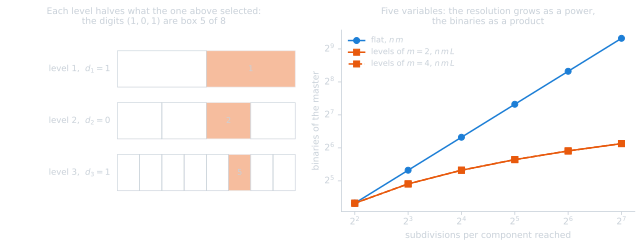
What it buys#
The resolution grows as a power and the binaries as a product. The encoding reaches \(m^L\) subdivisions per component for \(n m L\) binaries, where the flat encoding needs \(n m^L\):
resolution per component |
flat binaries, \(n=5\) |
levels, \(n=5\) |
|---|---|---|
\(16\) |
\(80\) |
\(40\) as \(m=2, L=4\); \(40\) as \(m=4, L=2\) |
\(64\) |
\(320\) |
\(60\) as \(m=4, L=3\) |
\(1024\) |
\(5120\) |
\(100\) as \(m=4, L=5\) |
Since the density is bounded above by the binaries a budget can identify, and not by the boxes, this is the one construction here that moves that bound.
The bounds stay affine in the one-hot variables, and the width \(\Delta_j m^{-L}\) no longer depends on them at all, so the mapping \(x = l(\alpha) + \xi \, \Delta \, m^{-L}\) is bilinear in \((\xi, \alpha)\) exactly as the one-level mapping is, with constant Jacobian blocks. Nothing in the bi-level machinery has to change.
Nothing is discarded and nothing is committed. One master holds every level, so the cuts survive, and the master may change a coarse digit and a fine one in the same iteration. That is the backtracking the descending hierarchies lack, obtained without restarting anything.
What it costs#
The model class. The cut model is linear in the one-hot variables, so over the digits it is additive: it can represent what each level contributes on its own, and not that the effect of a fine digit depends on the coarse digit it sits inside. On a landscape where it does — and on a multimodal one it always does, the same fine offset meaning different things in different regions — the model is misspecified in a way the flat encoding is not, the flat encoding having one coefficient per box index and no such restriction.
The trust region has to be rescaled. The metric counts the one-hot groups a candidate changes, and this encoding has \(nL\) groups where the flat one has \(n\). A radius of two would let the master change two digits, which is far tighter than letting it change two whole variables, so the radius is scaled to \(2L\) to compare like with like. Measured with the radius left at the diameter, that is with no effective region at all, the encoding looks considerably worse than it is.
What it is worth is in annex D.
Relation to spatial branch-and-bound#
Seen as a whole, the method is a spatial branch-and-bound whose branching tree is fixed a priori and flattened into a single MINLP master, rather than refined adaptively. That framing sets the expectations: a fixed subdivision is either too coarse, and the lower bound is weak, or too fine, and the master grows. Refining only the promising boxes would recover a genuine spatial branch-and-bound, at the cost of a master problem that grows during the run.
References#
Barjhoux, P.-J., Diouane, Y., Grihon, S., & Morlier, J. (2022). An outer approximation bi-level framework for mixed categorical structural optimization problems. Structural and Multidisciplinary Optimization, 65(8), 214.
Barjhoux, P.-J., Diouane, Y., Grihon, S., Bettebghor, D., & Morlier, J. (2020). A bi-level methodology for solving large-scale mixed categorical structural optimization. Structural and Multidisciplinary Optimization, 62(1), 337-351.
Duran, M. A., & Grossmann, I. E. (1986). An outer-approximation algorithm for a class of mixed-integer nonlinear programs. Mathematical Programming, 36(3), 307-339.